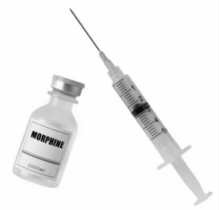
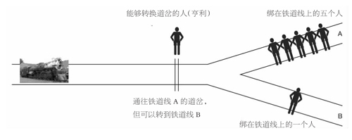

（修昔底德）
实施安乐死违背了一条最古老、最受尊崇的道德戒律：“汝不可谋害人命。”在某些条件下，实施安乐死是指导医学实践的最广为人知的两条原则的道德要求，这两条原则是：尊重患者自主权和提升患者的最大利益。在荷兰和比利时，主动安乐死可以在法律允许的范围内实施。
在荷兰合法实施主动安乐死的必备条件概要
1.患者必须面临一个无法忍受的、长期痛苦的未来。
2.死亡请求必须是自愿且经过慎重考虑的。
3.医生和患者必须确信没有其他解决方法。
4.必须有一名医生的意见而且必须以一种医学上适当的方式结束生命。
在瑞士和美国的俄勒冈州，类似于安乐死的医师协助自杀在满足某些条件时是合法的。在过去一百年中，英国上议院曾三次仔细考虑了使安乐死合法化，但是每次都否决了这一可能性。世界各地倡导自愿安乐死的社团吸引了大量的成员。
有一种常见却又不成立的反对安乐死的论证被我称为“打纳粹牌”。安乐死的反对者对支持者说：“你的观点和那些纳粹正好一样。”反对者根本不必说出这个结论：“因此你的观点是彻底不道德的。”
让我把这个论证用哲学中的经典形式三段论写出来（我将在第五章进一步讨论三段论）：
前提1：纳粹的许多观点都是彻底不道德的。
前提2：你的观点（支持一定情况下的安乐死）是纳粹的观点之一。
结论：你的观点是彻底不道德的。
这是一个不成立的论证。只有当纳粹所有的观点都不道德的时候，它才成立。
因此我将前提1换成如下前提1*：
前提1*：纳粹的所有观点都是彻底不道德的。
在此情况下，这一论证在逻辑 上是成立的，但为了评定这一论证是否正确 ，我们需要评定前提1*的真实性。
对于前提1*有两种可能的解释。一种解释是被称为人身批 判（ 或称错误伴随谬误 ）的一种经典错误论证：一种特定的观点是正确还是错误，并不取决于支持或反对该观点的理由，而是取决于一个特定的持有该观点的人（或者团体）（见瓦布顿，1996）。然而，坏人会有一些好观点，而好人也会有一些坏观点。很可能一个高级纳粹分子曾是道德范畴内的素食主义者。这个事实与道德范畴内是否赞成素食主义无关。重要的是赞成或反对该观点的理由，而不是谁持有该观点。顺便提一下，希特勒实践素食主义属于健康范畴，而不是道德范畴（科林·斯宾塞，1996）。
另一种对于前提1*的解释似乎更有希望说得通，该解释认为那些被归为“纳粹观点”的观点都是不道德的。一些特定的纳粹分子对某些问题的某些观点可能是不道德的，但是这些观点并不是“纳粹观点”。前述提及的纳粹观点是一套相联系的观点，都是不道德的，是受种族主义驱使的，且包括杀死与其意志和利益相冲突的人。因此当有人说安乐死是一种纳粹观点时，这意味着安乐死是以不道德的纳粹世界观为特点的核心的不道德观点之一。然而，这一论证的问题在于安乐死（例如在荷兰所实施过的）的绝大多数支持者并不支持纳粹的世界观。事实正好相反。围绕安乐死争论的双方都认为，假借“安乐死”名义进行的纳粹屠杀是极端不道德的。争论的关键在于，在特定条件下安乐死是对还是错，是道德还是不道德。这些均依赖于弄清特定的情况和安乐死的确切定义。只有这样，才能恰当评估支持或反对安乐死合法化的论证。我们需要的是澄清一些概念。
图3 那些反对自主安乐死的人常常打纳粹牌。
让我们从一些定义开始（见下文）。这样做有两个目的：区别不同种类的安乐死和为我们提供一张精确的词汇表。这种精确性在评估论证和论据时通常会很重要。如果一个词在论证中的某一处被用于表达了一种意思，又在论证中的另一处被用于表达了另一种意思，则该论证也许看上去成立而实际上却不成立。
安乐死与自杀：一些术语
安乐死这个词来源于希腊语eu thanantos，是愉快地或者安逸地死亡的意思。
安乐死：
为了Y的利益，X有意地杀死Y，或者允许Y死亡。
主动安乐死：
X执行了一个行为，该行为导致了Y的死亡。
被动安乐死：
X允许Y死亡。X停止或撤销生命延长治疗。
自愿安乐死：
Y自己有能力要求死亡的安乐死，即一个有行为能力的成人想要死去。
非自愿安乐死：
Y无能力表达自己选择权的安乐死，例如Y是一个有严重缺陷的新生儿。
强迫安乐死：
虽然Y有能力表达愿望，而且死亡是违背其愿望的，但是X为了Y的利益仍允许或迫使Y死亡。
自杀：
Y有意地杀死自己。
协助自杀：
X有意地帮助Y杀死自己。
医师协助自杀：
X（一位医师）有意地帮助Y杀死自己。
[摘自T.霍普、J.瑟武列斯库和J.亨德里克，《医学伦理学与法律：核心课程》（邱吉尔·利文斯敦出版社，2003）]
如果你研究一下这些定义，你马上就会清楚“打纳粹牌”完全无视了一些重要的区别。第一点是安乐死这个词，至少如我提出的用法所指出的那样，死亡是为了此人的利益，而纳粹杀人从不考虑被杀死者的利益。第二点是安乐死可以是自主的、强迫的或者是非自主的。第三点是安乐死可以是主动的或者被动的。让我们从第一点开始。
死亡会是从某人的最大利益出发的吗？我相信会。法庭相信会。大多数医生、护士和患者家属也相信会。在卫生保健领域，这个问题会非常频繁地出现。一位患有致命的不治之症的患者只能存活一两天了，但是通过积极的治疗，她可以多存活好几周。除了这一致命疾病，该患者可能还患有胸部感染，或者血液中化学成分不平衡。抗生素或者静脉输液有可能治疗该急性问题，尽管它们对阻止潜在疾病的发作起不到任何作用。所有护理患者的人通常都会同意，患者现在死去比接受生命延长治疗更符合患者的最大利益。如果患者现在的生活质量非常差，也许是由于持续的无法治疗的呼吸困难——一种常常比剧痛更难以改善的痛苦，这时不进行治疗的决定将更易让人接受。然而，如果我们认为患者的最大利益是活下去而不是在几天内死去，那么我们必须对其采取生命延长治疗。但我们不这么想：我们相信她的最大利益是现在死去而非接受生命延长治疗，因为鉴于潜在的致命疾病，她的生活质量已经非常差了。
多数重视个人自由的国家准许有行为能力的成人拒绝任何治疗，即使该治疗符合患者的最大利益，即使它可以救命。例如一位耶和华见证会的教徒会拒绝能挽救其生命的输血。如果一位医生试图违背有行为能力的患者的意愿对其进行治疗，则该医生就在未经允许的情况下侵害了该患者的身体完整性。在法律上这可能构成“殴打”。
在许多情况下，停止或撤销治疗在道德上被广泛认为是正确的，并已受到英国法律保护。接受被动安乐死有两个基本条件：
（1）符合患者的最大利益；
（2）与患者的意愿一致。
这两个条件中的任何一条都是支持被动安乐死的充分条件。
与普遍的医学实践一样，我相信确有这样的情况：一个人的最大利益是死去而非活着。我也相信一个有行为能力的人有权拒绝救命的治疗。在上述任一条件下停止或者撤销对患者的治疗都是正当的，即使这将导致其死亡。
如果我是正确的（并且英国、美国、加拿大以及许多其他国家的法律都支持这个立场），那么为什么考克斯医生，一位富有同情心的英国内科医生，会被判谋杀未遂呢？
莉莲·博伊斯是一位70岁的严重风湿性关节炎的患者。止痛药似乎对疼痛已经无能为力了。人们认为她大概会在几天或几周内死去。她请求她的医生考克斯结束她的生命。考克斯医生鉴于两个原因为她注射了致死剂量的氯化钾：
（1）出于对他的患者的同情；
（2）因为这是她要求他做的。
考克斯医生被指控并被判定谋杀未遂。（不指控他谋杀是因为就莉莲·博伊斯的病情来看，她本该是死于她的疾病而不是死于注射。）
法官在引导陪审团时说道：
这个案例清楚地明确了主动（自愿）安乐死在英国普通法中是非法的（而且可能是谋杀）。值得注意的是，这位患者有行为能力而且想要一死；深爱她的近亲和她的医生（和患者一样）都相信死亡符合她的最大利益，而且法庭也未怀疑这些想法的真实性。
在法律与道德的巨大影响之下，考克斯医生的案例与医学实践中完全合法地停止和撤销治疗的寻常案例之间的关键性不同点是，考克斯医生杀 了莉莲·博伊斯，而不是让她自己死去。
道德哲学家运用“思维实验”。思维实验是想象中的情形，有时相当不现实。它能梳理并分析某一情形道德方面的特征，被用来检验我们道德观念的一致性。我想让你用思维实验来考虑一个案例，像考克斯案一样，这个案例也是关于安乐死的。
安乐死：被困卡车司机之例
一个司机被困在一辆燃着熊熊大火的卡车中。没有任何办法救他。他很快就将被烧死。司机的一个朋友站在卡车旁。这个朋友有一把枪且枪法很准。司机要求他的朋友开枪打死他。对他来说，被枪打死比被烧死的痛苦要少一些。
我想把一切法律上的考虑先放在一边，问一个纯粹的道德问题：司机的朋友应该对他开枪吗？
朋友杀死司机有两个非常有说服力的理由：
1.这样会少些痛苦。
2.这是司机所希望的。
这是我们所考虑的能够证明被动安乐死合理性的两个理由。如果你认为他的朋友不该对司机开枪，你会给出什么样的理由呢？我会考虑七条理由：
1.他的朋友可能杀不死司机但却重伤了他，并给司机造成比不开枪更大的痛苦。
2.有可能司机没有被烧死而从大火中幸存下来。
3.从长远来说，这对于他的朋友并不公平：他永远会为杀死司机而感到内疚。
4.虽然在此例中让朋友杀死司机似乎是正确的，但是这样做仍然是错的；因为除非我们严格遵守杀人是错误的这个准则，否则我们会滑下一个滑坡。不久我们将会杀死别的人，因为我们误以为这符合他们的最大利益。而且我们会进一步下滑到为我们的利益去杀人。
5.自然论证：虽然对于一位临终的患者来说，停止或撤销治疗是顺其自然，但是杀人是对自然的干涉，因此它是错误的。
6.扮演上帝的论证：这是自然论证的宗教版本。杀人是“扮演上帝”——抢走了本应由上帝独自担当的角色。相反，听任死亡并没有篡夺上帝的角色，而且如果在此过程中施加关爱，还能让上帝的意愿全部得以实现。
7.杀人在原则上是一个（重大）错误。被动安乐死与安乐死之间的差别在于前者包含了“放任去死”而后者包含了杀人；而杀人是错误的——它是一个根本上的错误。
这些论证能站得住脚吗？让我们依次推敲。
论证1
确实，现实生活中我们无法确定结果。如果你相信论证1，那么你就主张安乐死不是原则上错误的，主张现实生活中我们永远无法确定它会仁慈地结束生命。我乐于承认我们永远无法绝对肯定开枪会没有痛苦地杀死他。有三种可能的结果：
（a）如果他的朋友没有开枪（或者如果子弹完全没有击中），那么司机会遭受相当大的痛苦并死去——让我们把这个痛苦量称为X。
（b）他的朋友开了枪并得到了预期的结果：司机几乎立即死亡，而且几乎没有痛苦。在这种情况下，司机会承受一个痛苦量Y，而Y比X小很多——实际上如果我们从他朋友开枪的那一刻开始计算痛苦量，Y几乎等于零。
（c）他的朋友开了枪，但是只是使司机受伤，造成他遭受一个总的痛苦量Z，这里Z比X大。
根据论证1，正是由于可能性（c），他的朋友不向司机开枪会更好。
我们现在可以比较一下他的朋友不开枪与开枪这两种情况。在前一种情况中，总的痛苦量是X。在后一种情况中，痛苦量非Y（接近零）即Z（比X大）。因此，他的朋友开枪后可能造成一个更好的事态（较少痛苦）或者一个更糟的事态（更多痛苦）。如果重要的是避免痛苦，那么是开枪好还是不开枪好取决于X、Y和Z之间的区别和各个结果发生的概率。如果瞬间死亡是开枪后最可能发生的结果，且如果痛苦量Z不比X大很多，那么开枪杀死司机似乎是正确的，因为开枪很有可能会大幅减少痛苦。
我们很少能对结果完全肯定。如果这种不确定成为一条不去行动的理由，那么我们将根本无法在生活中做决定。此外，医学环境下的安乐死（比如考克斯医生所做的）基本不可能带来更多的痛苦。我推定论证1没有对反对自主安乐死提出一个令人信服的论证。
论证2
论证2是论证1的反面，而且存在同样的弱点。司机痛苦而死的可能性是很大的，而他幸存的可能性是否会更大，这个问题取决于两者实际概率的大小。如果司机基本不可能活下来，那么论证2并不具有说服力。
论证2的支持者可能会反驳这个结论，认为将司机从燃烧的卡车中营救出来的微小概率的重要性应当是无限大的。如此看来，无论其发生率有多低，都应该抓住这样的机会。对于此论证有三种反应：第一种，给予救援成功的可能性以无限大的重要性有什么根据？第二种，如果我们因为考虑到救援成功的极小概率而认为不开枪是合理的，那么我们同样可以断定我们应该开枪。这是因为子弹虽然要杀死司机却可能实际上让他得救（如击飞了车门），这同样具有极小的概率。第三种，如果论证2为拒绝安乐死提供了可信的理由，那么它也可以为任何情况下都拒绝停止医疗提供可信的理由。这是因为给予治疗可以让生命延长足够的时间来让“奇迹”发生，让患者被治愈并健康地活得更久。
论证3
论证3是不成立的，因为其回避了正在讨论的问题的实质。如果对司机开枪是件错误的事情，那么他的朋友才会感到内疚。但是问题的关键在于怎样做才是对的或者错的。如果对司机开枪是对的，那么他的朋友就不应该因为射杀了他（并因此减少了司机的痛苦）而感到内疚。有可能感到内疚不管怎样都不是决定他的朋友该怎样行动的一个原因。相反，我们应当先回答怎样做才是正确的，只有这样我们才可以问他的朋友是否应该感到内疚。
论证4
论证4是所谓滑坡论证的一个版本。这是医学伦理学中非常重要的一种论证，我将在第五章中更详细地探讨。我将区分两种滑坡——逻辑或者概念上的滑坡，以及经验或者实践中的滑坡。正如我们即将看到的，反驳滑坡论证所需的理由取决于论证是以何种方式提出的。
论证5和6
自然论证和扮演上帝的论证与滑坡论证一样，在医学伦理学中有着更普遍的应用。我将在随后更详细地讨论它们（第五章）。
论证7
在所有考虑到的论证中，只有论证7认为杀人是原则上错误的。
现阶段我们需要弄清楚“杀死”的含义。有些人认为安乐死是原则上错误的，而通常医学实践中的被动安乐死则不是错误的。他们的理由是安乐死包含了主动地造成死亡而不是未能阻止死亡。
但是这个理由并不充分。让我们来考虑下面的医学情形。吗啡有时被用在患有绝症的濒死的患者身上，以保证患者尽可能少受痛苦。除了防止疼痛，吗啡还可以减少呼吸的频率与深度（通过作用于大脑中负责呼吸的部分）。在某些情况下，尽管不是在所有的情况下，吗啡不仅可以减少痛苦，还可以有缩短患者生命这一可预见的效果。医生对病危患者使用吗啡来减少患者的痛苦并预见（尽管不是有意地）患者的提前死亡，这并不会违反法律。事实上，在这些情况下使用吗啡常常是一种很好的临床操作。然而向患者注射吗啡和注射氯化钾一样是主动的行为。关键的不同在于，在注射氯化钾的情况下，注射的意图 是让患者死亡——而这是减轻患者痛苦的方式。在注射吗啡的情况下，注射的意图是减轻疼痛；提前的死亡是可以预见的却不 是有意为之的。 至少，英国及其他许多国家的法律就是这么认定的。

图4 医生A给一位快要死的患者注射吗啡（一种强力止痛剂）以减轻其病痛，并且预见患者会更快地死去。医生B为了减轻一位快要死的患者的病痛为其注射吗啡而加速其死亡。医生A和医生B的做法在道德上有什么差别吗？
根据这种分析，杀人，也就是安乐死中的杀人，包括两个方面：一方面，所采取的是一个主动行为（而非仅仅是不作为）；另一方面，死亡是有意造成的（而非仅仅是可预见的）。这两个方面都必须纳入到杀人的定义中去，但没有一个是充分条件。
检验作为与不作为、企图与预见一个后果之间区别的道德重要性的几个假想事例（思维实验）
1.史密斯与琼斯之例
史密斯溜进6岁堂弟的浴室溺死了堂弟，并把现场布置得像是一次意外。史密斯这么做的原因是，他堂弟的死会给他带来一大笔遗产。
琼斯准备从6岁堂弟的死中获得和史密斯差不多的一大笔遗产。和史密斯一样，琼斯溜进堂弟的浴室并企图溺死他。然而，堂弟意外滑倒撞到了自己的头，随之溺死在浴缸中。琼斯本可以很轻松地救起他的堂弟，但他非但没有准备救他堂弟，还随时准备将那孩子的头按回到水里。但后来表明这是没有必要的。
史密斯和琼斯的行为在道德上有区别吗？
这对事例可用来支持一个观点：当后果与动机一样时，作为（杀人）与不作为（没有救人）在道德上是没有区别的。
2.罗宾逊与戴维斯之例
罗宾逊没有向一个帮助贫困国家抗击饥饿的慈善团体捐赠100英镑。结果，一个本可以靠罗宾逊给的钱活下去的人饿死了。
戴维斯捐赠了100英镑，但也向一个分发捐赠食物的慈善机构寄去了一包有毒的食物。最终的也是其想要的结果是，一个人被那包有毒食物毒死了，而另一人却因100英镑的捐款而活命。
罗宾逊与戴维斯所做的在道德上有区别吗？如果有，区别是否在于戴维斯做出了杀人的举动，而罗宾逊只是不作为？
这对事例是用来反驳从史密斯和琼斯之例所推出的结论的，它表明即使最终的结果一样，一个举动（寄有毒包裹）加上杀人的企图在道德上比不作为（未能给予慈善捐助）要坏得多。
3.牺牲一人救五人
失控的火车： 一列失控的火车正在接近铁道上的道岔。如果道岔没有转换，那么火车将轧死绑在铁道线上的五个人。如果道岔转换了，火车会冲上另一条铁道且只会轧死一个（不同的）人。没有办法使火车停下；但是你可以转换道岔让一个人去死，而不是五个人。
你会转换道岔吗？
器官捐赠： 可以杀死一个健康的人以获得他的器官并救活五个不同器官衰竭的人。
你会杀死这个健康的人来使用他的器官吗？
通常人的直觉是第一种情况下改变道岔是对的（这样会死较少的人），杀死一个健康人获得他的器官来救活更多的人则是错误的。然而，在这两个事例中，不作为将导致五人死亡，而作为只会导致一人死亡。什么可以判断常人直觉的对错？这对事例可用来支持这样一个观点：行为的本质会带来道德上巨大的不同，即便后果是一样的。

图5 如果亨利什么都不做，火车会沿铁道线A行驶并轧死五人。如果亨利转换道岔，火车会沿铁道线B行驶并轧死一个（不同的）人。火车不可能及时停下，这六个被绑在铁道线上的人也不会有人被及时释放。亨利应该转换道岔吗？
简而言之，这个认为安乐死是原则上错误的论证在道德上强调了（1）作为与不作为的区别，以及（2）企图与预见死亡的区别。作为与不作为之间，企图与预见之间，是否存在道德上的甚至概念上的差异？在这两个问题上大家已经展开了许多争论，却没有达成一个确定的立场。前面的方框中给出了争论双方使用的一些思维实验。我不想泛泛讨论这些有关道德区别的大问题——除非它们与安乐死的争论相关。
值得注意的是，所有这些思维实验都包含了杀人或者未能救人，而这都不是为了一个人的利益。此外，这些例子中还有一些包含了杀一人而救另一人。当然，在安乐死的情形下，情况并不如此。我知道没有令人信服的思维实验可以表明作为与不作为或者企图与预见之间道德上的区别，这个区别包含了以下三点安乐死的关键特征：
（1）我们进行行为评估的人对于将死者有着明确的关爱的责任；
（2）没有损害一人而使另一人受益的问题；
（3）死亡是将死者的最大利益。
安乐死的反对者最终会将他们的问题归结到一个基本的原则上：杀人在道德上是错误的。他们会认同这样的复杂的情况存在：杀死一人却可拯救另一人——或者许多其他人。他们会认同在这些情况下，杀人应该是正确的做法。但在安乐死的情况下，没有他人的生命会被挽救。安乐死的错误源自杀人的错误，而且并没有被拯救其他生命所抵消。
我们有强烈的直觉认为杀人是错误的。对于大多数人来说，与继续活下去相比，现在就濒临死亡是一个很大的伤害。杀人之所以通常是一个大错，是因为濒临死亡通常是一个很大的伤害。然而，杀人的错误是由濒临死亡的伤害造成的，反之则不成立。因此，如果患者的最大利益是现在死去，而不是忍受被拖延的、痛苦的临终过程，那么杀人就不再是一个错误。换句话说，当死亡带来利益而不是伤害时，杀人并不是一个错误。那些认为安乐死是原则上错误的人忘记了杀人的错误与濒临死亡的伤害之间在概念上的联系。
我反对自主安乐死是原则上错误的这个观点，因为该论证本末倒置：是濒临死亡的伤害使得杀人是一个错误，而反过来说则不对。当遵循一个道德准则的结果是遭受痛苦时，我们就需要仔细审视一下我们的道德准则，并且怀疑我们是否过于生硬地应用了这个准则。我相信，我们在主张自主安乐死是道德上错误的时候就是这么做的。以别人的痛苦为代价去追求一种道德清白感，这是有悖常理的。